The Games
Orlandu's Arcade lives in two rooms: the garage arcade — four uprights, the pinball row, and the broadcast monitor racks — and the game room inside the house, where the candy cab and the cocktail hold court.
The garage arcade — uprights
Big Blue
The classic American showcase cabinet — rebuilt power supply, and now wearing fresh Capcom-logo side art. This is where Marvel vs. Capcom lives.
VS. UniSystem — Dedicated
Nintendo's arcade answer to the NES era, running VS. Super Mario Bros. — which is not the game you think it is. Did you know? →
Donkey Kong
Blue plywood, made in Japan — the machine that started Nintendo's arcade legend, and most collections worth the name.
Mario Bros. — Widebody
Two players, one sewer. The widebody Mario Bros. rounds out the Nintendo upright lineup.
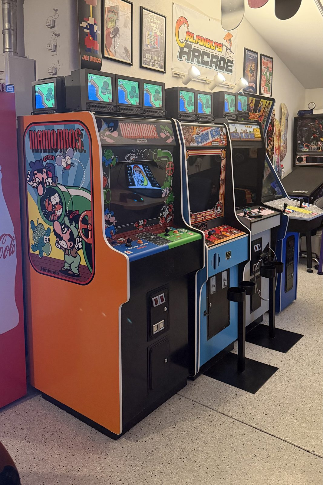
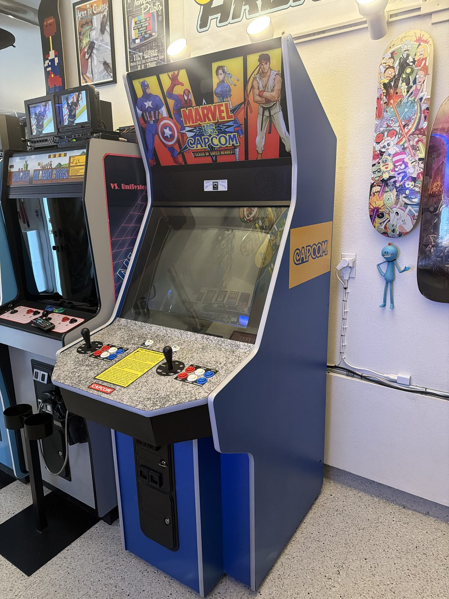
The garage arcade — pinball row
Indiana Jones: The Pinball Adventure
The widebody DCS-era classic. Currently on the bench chasing an intermittent cold-boot gremlin — follow along.
Total Nuclear Annihilation
Scott Danesi's synthwave fever dream. Fast, brutal, single-level, perfect.
Ghostbusters Premium
Who you gonna call when the magna-slings throw the ball somewhere unfair? Nobody. That's the game.
Rick and Morty — Blood Sucker Edition
The limited Blood Sucker Edition, with a fresh flipper rebuild using a CNC-machined mech system.
The game room inside the house
Mini Cute — Pink
The only candy-style cabinet in the collection, and it's the one that matters: Capcom's compact Mini Cute in the pink variant.
VS. DualSystem — Red Tent Cocktail
The rarer sit-down side of the VS. family — the distinctive red-canopy cocktail DualSystem.
The game room also hosts the big PVMs — the 29-inch PVM-2950Q and the PVM-20L5. Meet the fleet →
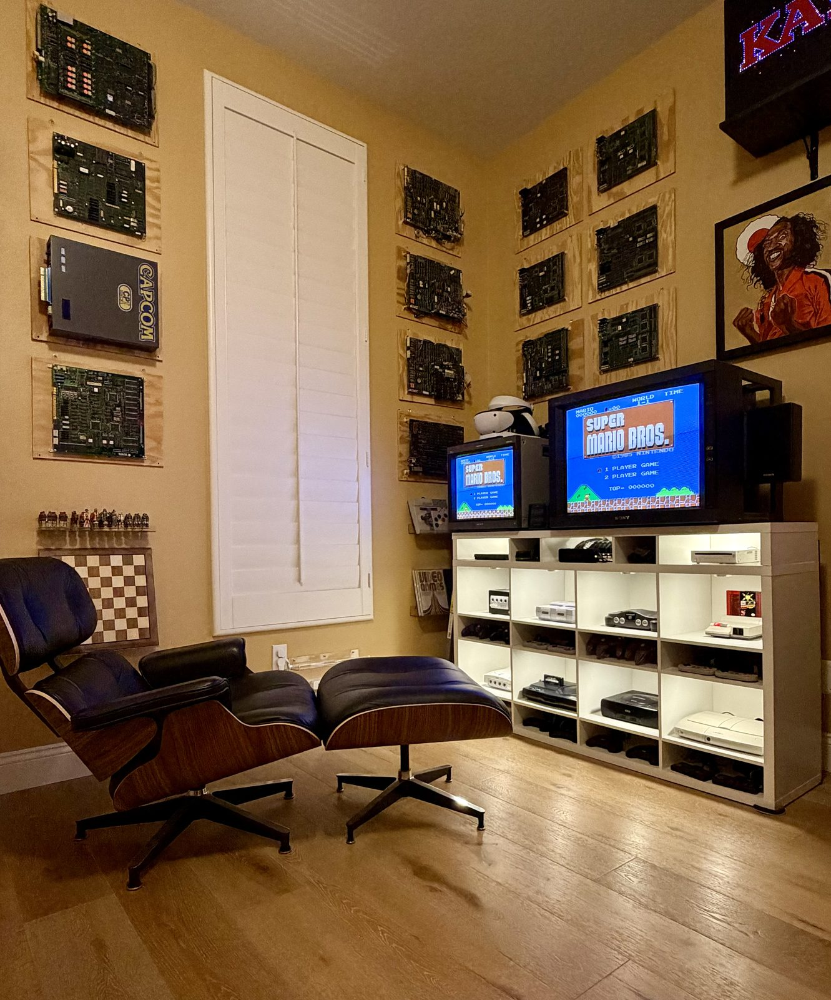
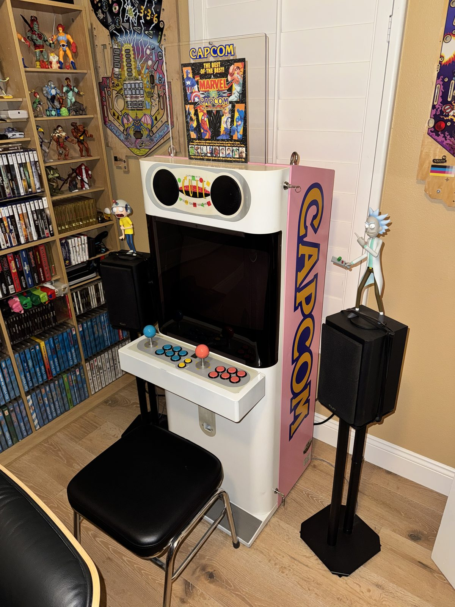
Nintendo retail signage
KB Toys co-branded display
Store-glow nostalgia: the fiber optic Nintendo sign that once pulled kids across a mall.
World of Nintendo Superbrite
The iconic red-and-white World of Nintendo marquee, Superbrite fluorescent version.
NES Racetrack sign
The NES racetrack display, out of the box and on display in the game room — you can spot it in the Store glow shot below.
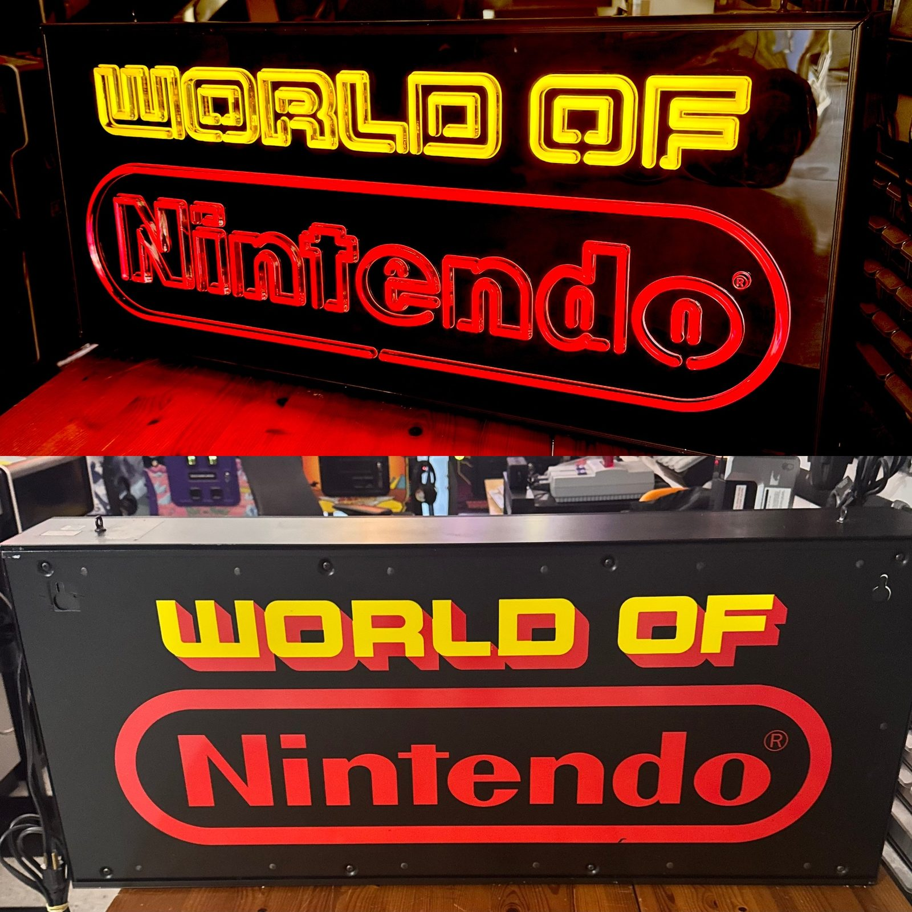
In memoriam machines that passed through on their way to someone else's story
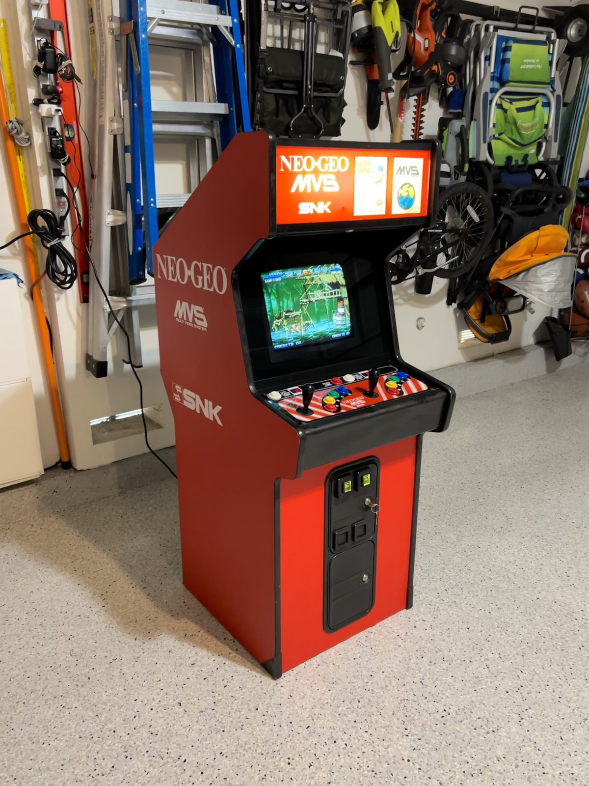
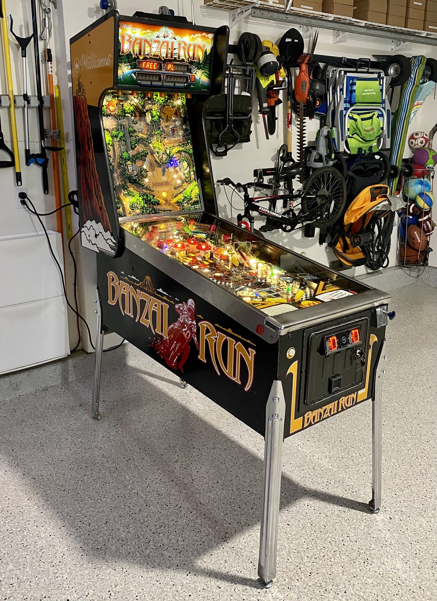
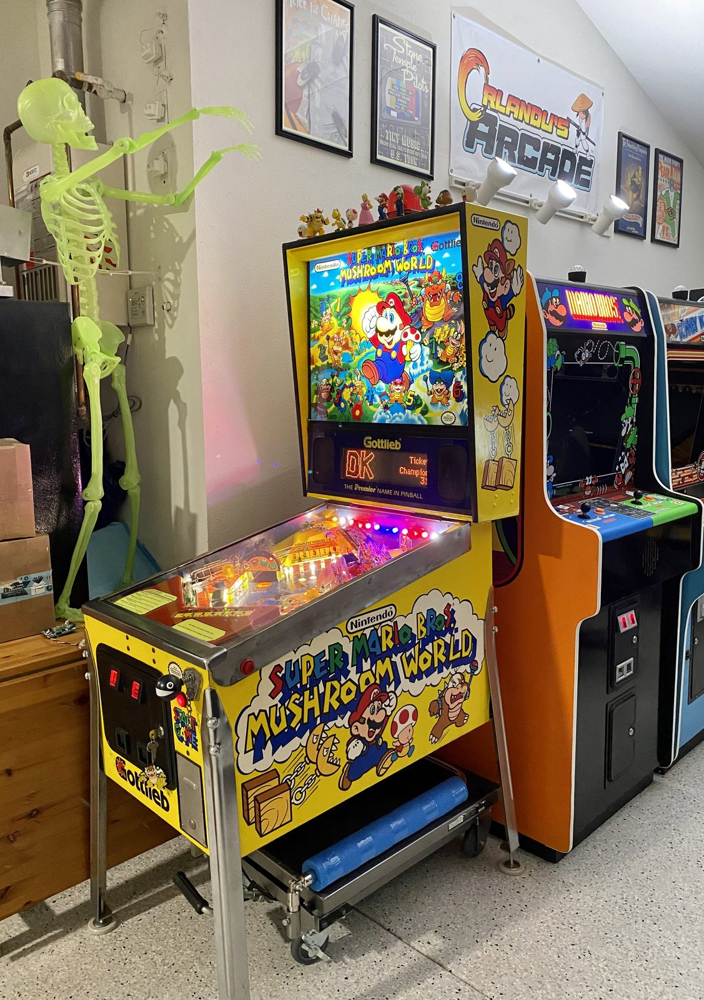
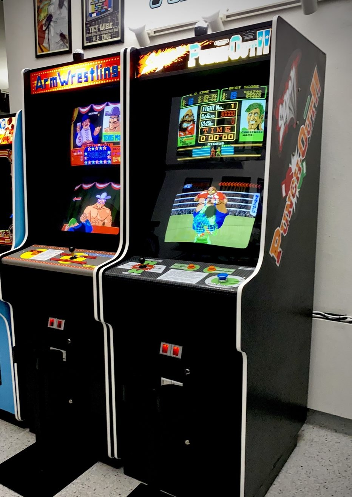
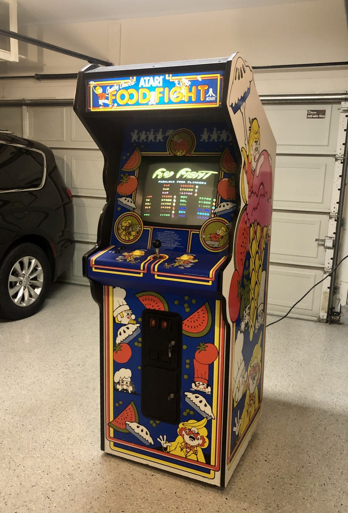
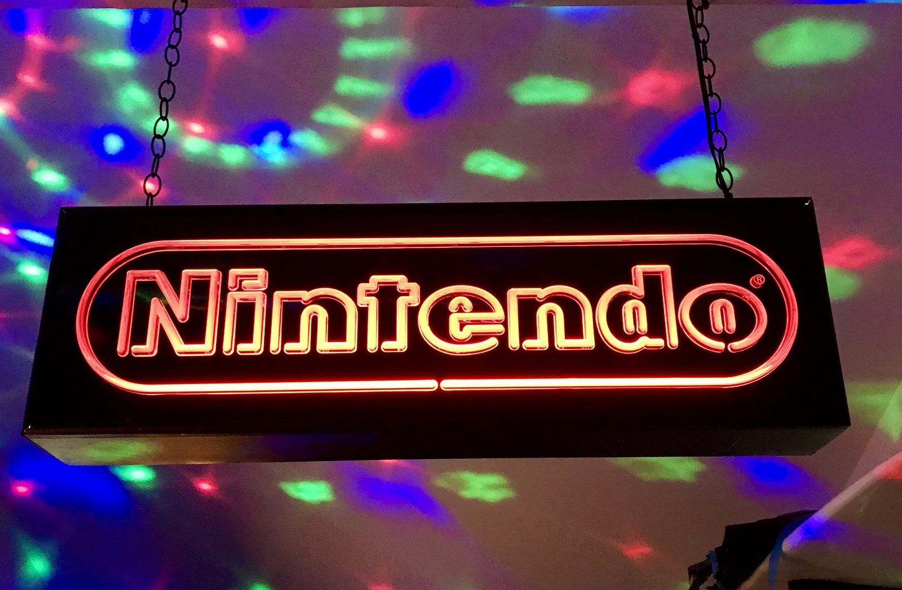
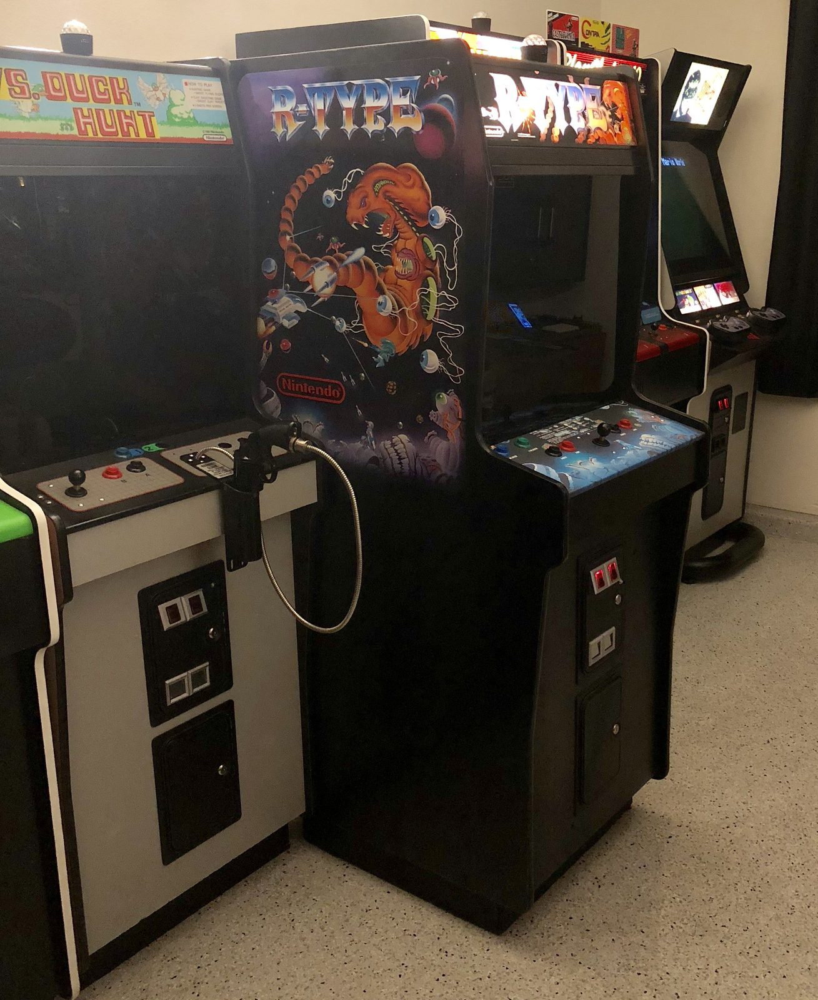
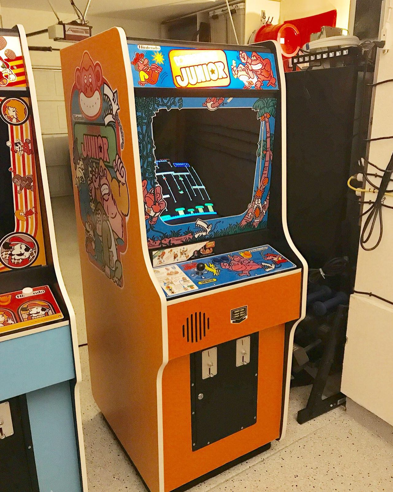
Console library
Beyond the cabinets there's a catalogued collection of consoles and games — nearly 900 items logged, from a JVC X'Eye (currently out for servicing) to a modded PS2 running its library from a memory card. The hardware now has its own page.